The Four Pillars
Words
A global participatory text and archive project capturing human sentiment, linguistic DNA, and philosophical thought across international borders.
Life of a Box
A global sustainability initiative transforming discarded industrial logistics into monumental ecological sculptures, bridging recycling with fine art.
Voices of the Land
Bringing together sacred concepts, oral traditions, and linguistic heritage passed down through generations of indigenous guardians.
روحنواز (Rooh-Nawaz)
Deeply moving testimonies of human resilience in words and images, honoring the global Persian community and collective historical memory.
Spatial Chapter • Words
Global Project Words gathers thousands of single, spontaneous word contributions from world leaders, Nobel laureates, environmentalists, scientists, and cultural guardians across global networks of governance and heritage. Transformed into monumental abstract canvases, these donated words serve as raw linguistic energy—mapping the ongoing dialogue between contemporary global crisis, human endurance, and material memory.
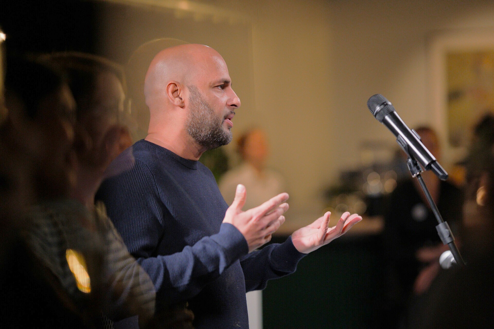
Curatorial Opening
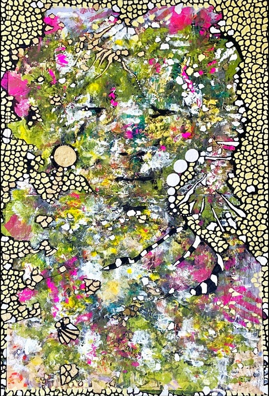
Equanimity / Gelassenheit
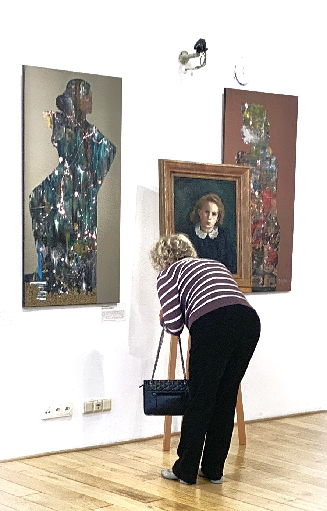
City Gallery High Mýto
I. Linguistic DNA & Global Energy
Extracting singular word donations from diverse cultures to map universal emotional and philosophical responses to modern planetary existence.
II. Participatory Architecture
Bypassing traditional art world gatekeeping by allowing global scholars, leaders, and communities to directly author the conceptual foundation of the canvas.
III. Monumental Preservation
Translating ephemeral text contributions into heavy, multi-layered pigment installations preserved for future cultural and historical archives.
Spatial Chapter • Life of a Box
Utilizing recycled cardboard boxes sourced from industrial supply chains across Germany, France, England, Norway, and the United States, Life of a Box is a flagship global sustainability initiative. Supported by environmental ministries and analyzed across major European media, it bridges ecological responsibility with monumental contemporary sculpture—proving that everyday discarded material holds profound cultural and aesthetic longevity.
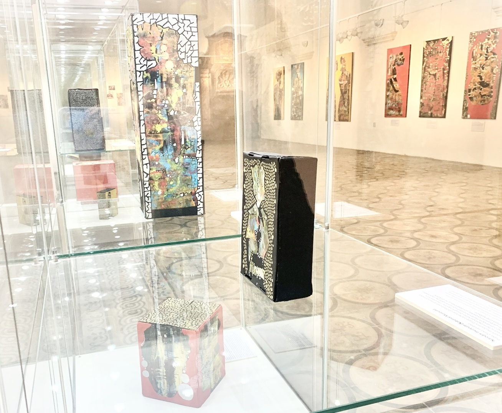
Museum of West Bohemia
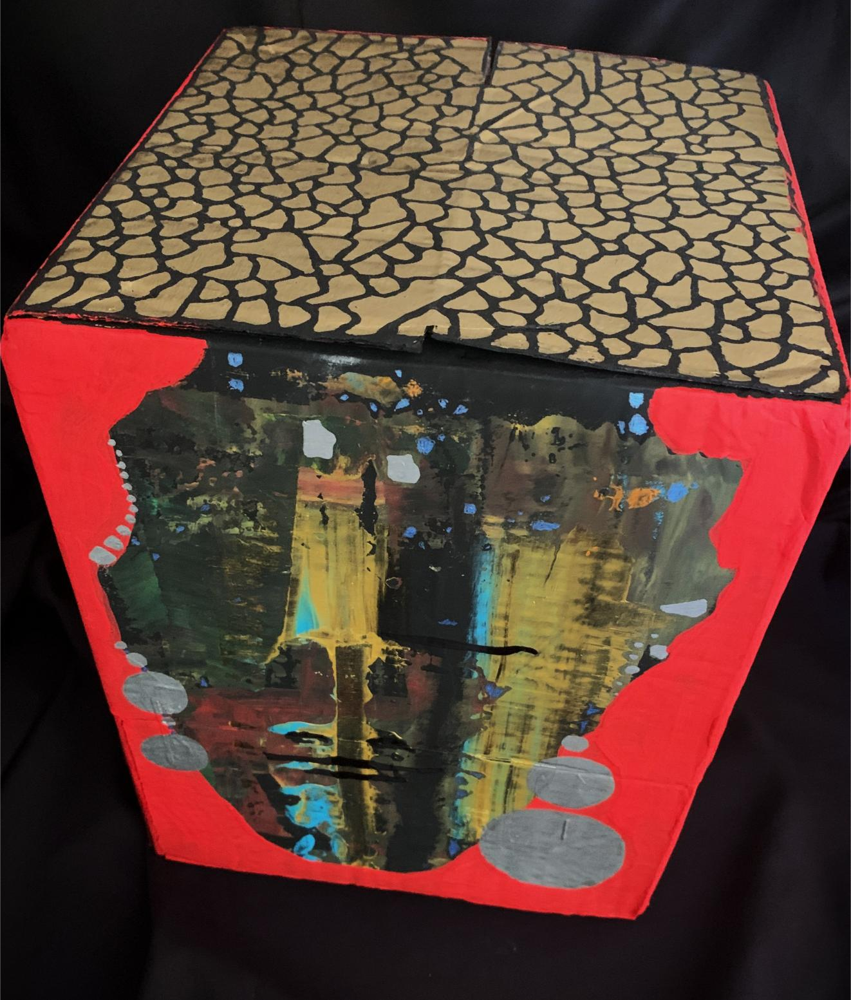
from out of the blue studio gallery
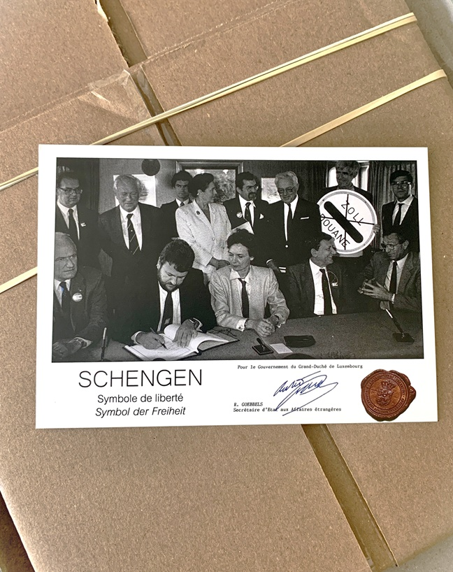
European Schengen Museum
100+ Global Solo Retrospectives
Three decades of documented solo exhibitions across major international capitals—including Toronto, London, Athens, Prague, Brussels, Dubai, Oulu, Goa, and Poland.
Institutional & Sovereign Collections
Monumental works and archives held in permanent museum collections, state foundations, and prominent private collections worldwide.
3 Decades of Monographic Literature
A comprehensive history of critical essays, exhibition monographs, and scholarly reviews analyzing the evolution of Hesham Malik’s oeuvre.
Spatial Chapter • Voices of the Land
Honoring and preserving an ancient lineage of wisdom by thoughtfully sharing integral fragments of indigenous knowledge, sacred concepts, and oral philosophy with the global community. From Cree concepts of sâkihitowin (love as the bedrock of collective wellness) to Anishinaabemowin expressions of Ankosé ("everything is connected"), the archive documents how living languages embody deep environmental and relational intelligence.
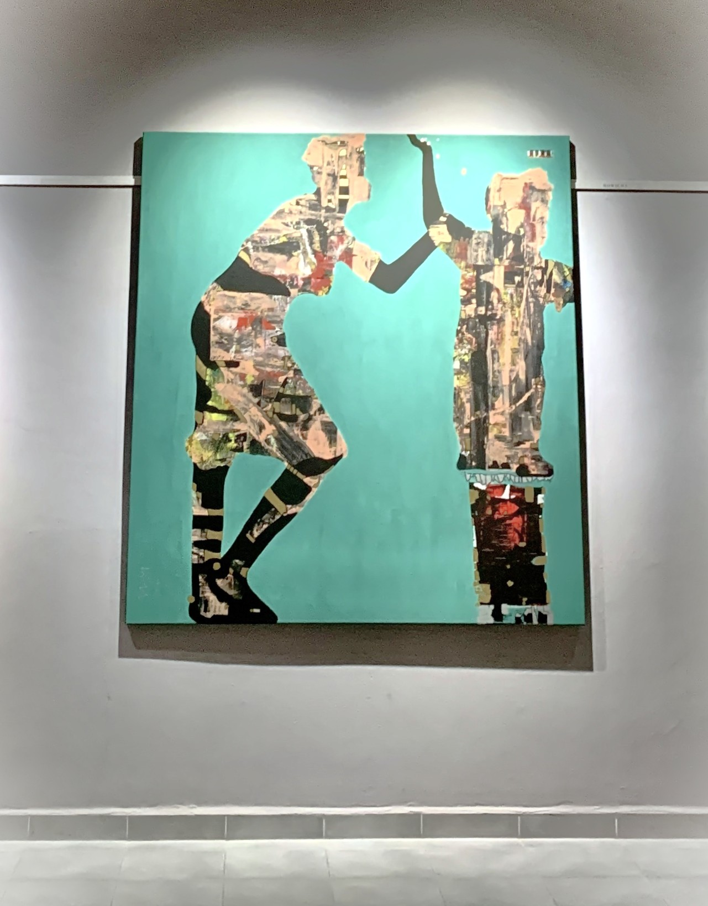
Museum of Jindřichův Hradec
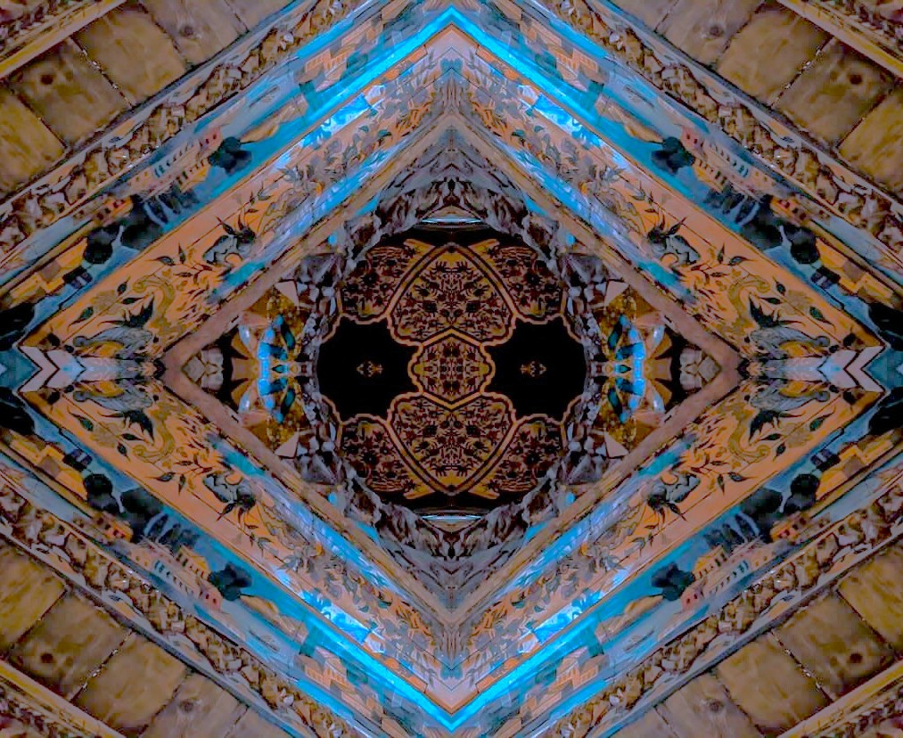
Museum Karlovy Vary
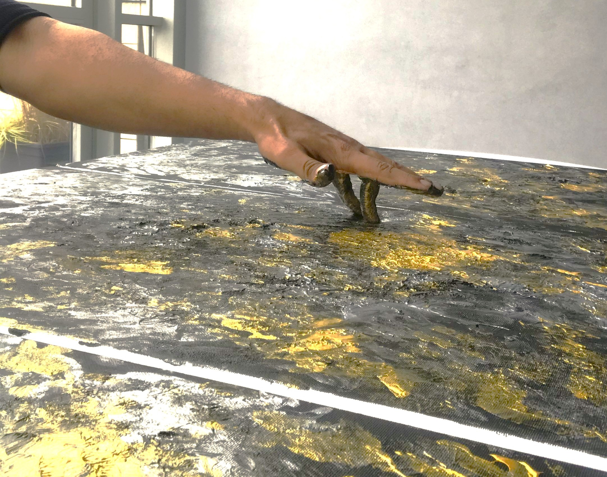
Active Research & Creation
I. Relational Epistemology
Grounding fine art in indigenous worldviews where all life, territory, and living language are intrinsically linked—exemplified by concepts like Ankosé (everything is connected).
II. Social Capital & Well-being
Archiving sacred expressions of community wellness, relational duty, and mentorship—such as sâkihitowin (love) and Sakorihonnienni (one who teaches)—as foundational social infrastructure.
III. Land Custodianship & Earth Strength
Translating living environmental concepts—including Junggayi (traditional custodian), Ama (water), and Mashkiki (strength of the Earth)—into monumental visual heritage.
Spatial Chapter • روحنواز (Rooh-Nawaz)
An artistic exploration of the global Persian diaspora, delving into a diverse array of responses towards challenging life circumstances. Anchored in concepts like bi-gharāri (the active rejection of intellectual stagnation) and Adab (ethical conduct and reverence), Rooh-Nawaz transforms personal memory and exile into monumental visual expressions.
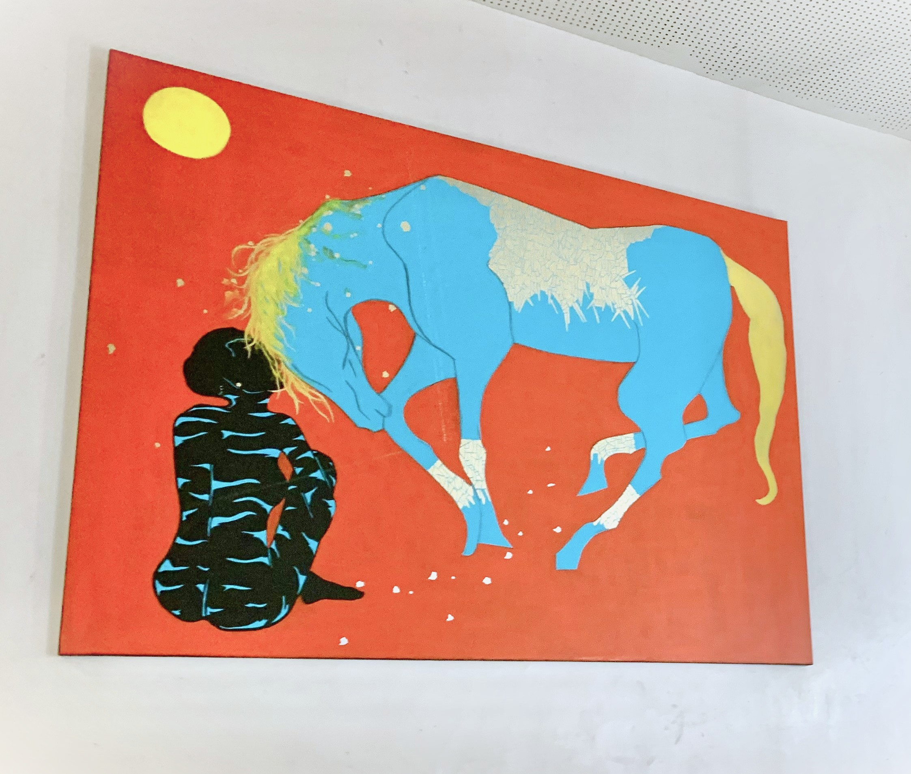
Rooh
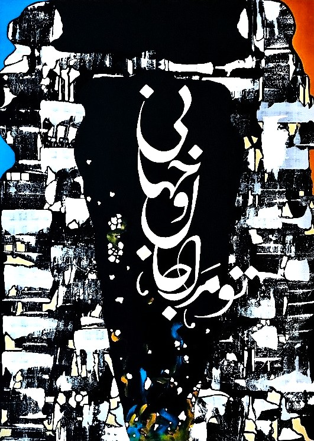
Museum Kromeriz
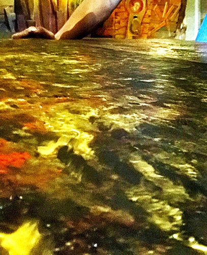
Rooh-Nawaz Creation
I. Epistemic Unsettledness & Exile
Examining how concepts of movement and seeking—such as Bi-gharāri and Rahi—reframe displacement into a dynamic state of continuous intellectual and spiritual creation.
II. Cultural Convergence & Ethos
Archiving living Persianate virtues like Adab (reverence) and untranslatable expressions of shared spirit like Jān as foundational infrastructure for cross-cultural unity.
III. Spiritual & Historical Persistence
Translating endurance, historical courage, and non-dualistic oneness into monumental public canvases celebrating the timeless dignity of human resilience.
Institutional Holdings & Provenance Register
- • National Museum of History of Ukraine (Kyiv): Permanent Sovereign Archive Holdings
- • Museum of Paper / Muzeum Papiernictwa (Poland): Permanent Monographic Installation & State Archive
- • State & Regional Museum Network (Czech Republic): Permanent Institutional Collections (Plzeň, Karlovy Vary, Jindřichův Hradec) & Ecclesiastical Commissions
- • Amazon EU Headquarters (London / EU Flagship): Industrial Material Sustainability Installation
- • Brussels Expo Architectural Pavilion (Belgium): European Ecological Sculpture Commission
- • Higher Education Spatial Installations: Charles University (Prague) & Seneca College (Toronto)
- • Center for Mark Twain Studies / Elmira College (New York, USA): Global Literary Gallery Initiative
- • GENIUS Olympiad / SUNY Oswego (USA): Global Environmental Education Archive
- • Jordan Center for Persian Studies (UC Irvine) & Göttingen University (Germany): Linguistic Archive Analysis